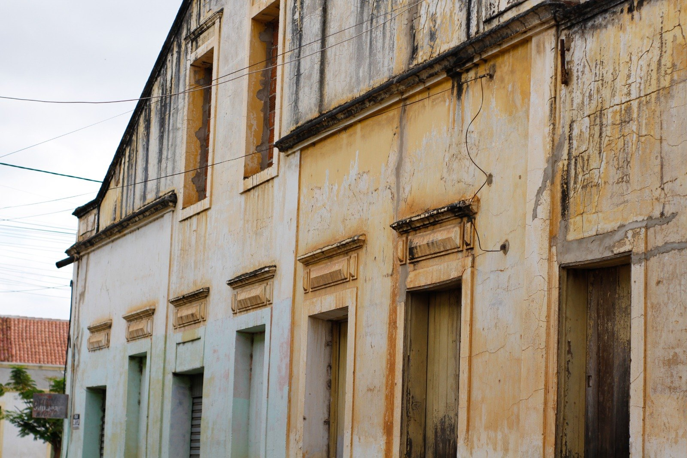
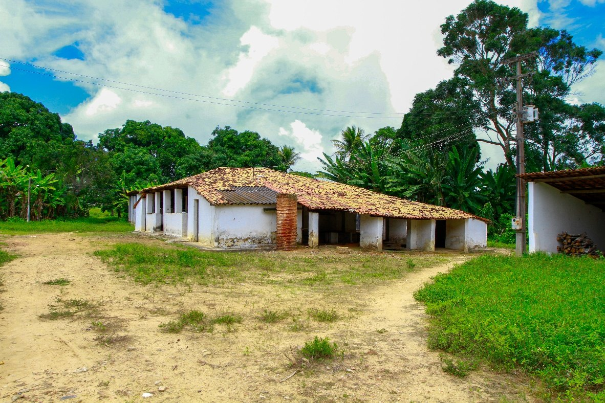
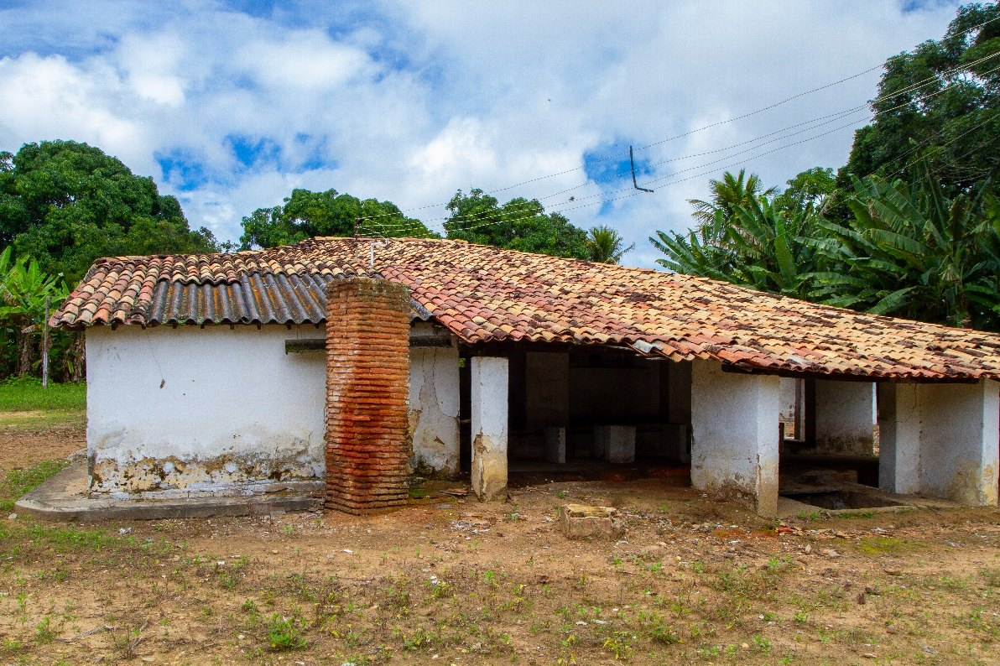
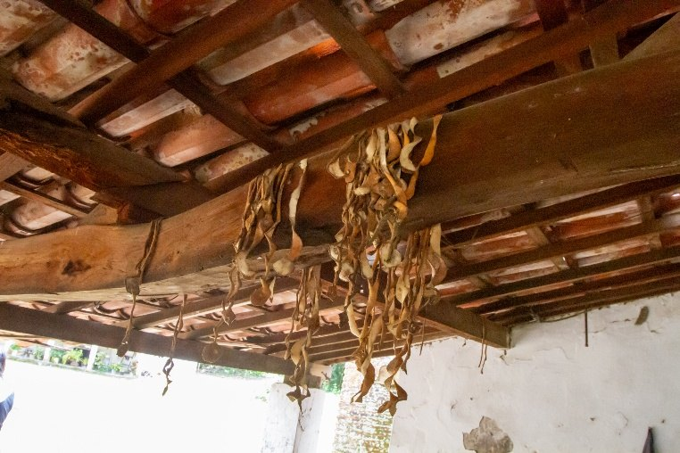
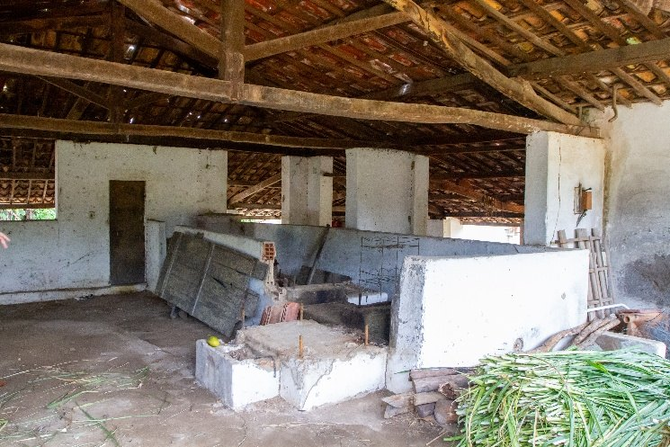

Observe a arquitetura formada por colunas, característica de uma paisagem comum no meio rural nordestino. A madeira cerrada denuncia uma mudança da casa ao longo do tempo. A imagem das canas de açúcar revela que o lugar ainda é usado.
↳ ver
Cartografias do Abandono
0%

Catálogo fotográfico & proposição didática
memória, esquecimento e fotografia
no ensino de História para o Ensino Médio
§ 01 — Abertura
Prezados professores(as) e pesquisadores(as), apresentamos nessa travessia o nosso catálogo “Cartografias do Abandono: memória, esquecimento e fotografia no ensino de História para o Ensino Médio”, objeto pensado como proposição didática, fruto de uma pesquisa desenvolvida no Mestrado Profissional em Ensino de História, ProfHistória, da Universidade Estadual do Piauí (UESPI), Campus Alexandre Alves de Oliveira, com orientação do Professor Doutor Fernando Bagiotto Botton.
O trabalho compõe a pesquisa intitulada Cartografias do Abandono: estudo sobre o esquecimento como objeto para o Ensino de História, escrita com a intenção de permitir aos professores de História e Ciências Humanas do Ensino Médio trabalharem de forma mais lúdica e criativa conceitos abstratos como esquecimento, temporalidade e memória.
O catálogo, portanto, conecta os aspectos artísticos da fotografia — ao criar uma linguagem imagética sobre os esquecimentos, memórias e patrimônios — com o aprendizado histórico. Assim, possibilita aos professores refletir, a partir dos registros fotográficos, estratégias de ensino e aprendizagem históricas.
As séries fotográficas apresentadas aqui irão narrar os elementos constitutivos da realidade contemporânea, marcada por uma aceleração da memória e dos ritos sociais, tendo a ruína, o descarte e o abandono uma configuração estética que marca não somente aspectos materiais, mas também subjetivos e simbólicos. Nessa jornada, esperamos que a linguagem fotográfica possa estimular o pensamento crítico e criativo das aulas de História.
Série fotográfica
cultura material e imaterial e esquecimento

Antes de saber qualquer coisa sobre este lugar, observe.
Perguntas de partida
A fotografia registra uma casa de farinha localizada no município de Guaraciaba do Norte, Ceará. Espaços como esse estão relacionados à produção da farinha de mandioca e às práticas, técnicas e relações de trabalho desenvolvidas em torno desse processo. Mais do que uma construção, a casa de farinha pode ser compreendida como um espaço de produção de experiências, saberes e memórias.
A fotografia foi registrada pela tarde, em março de 2026. A ideia foi registrar uma imagem ampla da casa, marcando a sua centralidade naquele espaço. Em gerações anteriores, esse local manifestava um polo acolhedor de sociabilidades e afetos sociais que carregavam simbologias, ritos e memórias sociais fundantes de um pertencimento local.
Desafio
Prancha 02
A construção apresenta marcas materiais que podem provocar perguntas sobre sua trajetória. Arraste para confrontar os dois enquadramentos.

Marcas materiais
Eixo temporal
A fotografia levanta questionamentos sobre o tempo do lugar — passado, presente e futuro.
Reflita
Professores, vamos pensar sobre a fotografia: primeiro, ela registra um determinado enquadramento, em determinado momento, a partir do olhar de quem fotografa. Por isso, observar uma fotografia historicamente significa perguntar não apenas “o que ela mostra?”, mas também “o que ela não mostra?”, “quem produziu essa imagem?” e “que histórias podemos investigar a partir dela?”
Uma casa de farinha pode ser entendida como um lugar de memória, não apenas por sua estrutura física, mas pelas experiências humanas que nela aconteceram. Lugares de memória são elaborações sociais e culturais que carregam uma experiência temporal — ou seja, a relação do lugar com a memória é fruto das escolhas e convenções sociais.


A fotografia não se configura simplesmente como a fotografia de uma casa de farinha. Torna-se um dispositivo para ensinar o aluno a olhar historicamente para um lugar.
§ 02 — Chave de leitura
As fotografias da casa de farinha podem ser trabalhadas em três dimensões que operam ao mesmo tempo.
Observe a arquitetura formada por colunas, característica de uma paisagem comum no meio rural nordestino. A madeira cerrada denuncia uma mudança da casa ao longo do tempo. A imagem das canas de açúcar revela que o lugar ainda é usado.
↳ ver
Observe que a estrutura resistiu ao longo dos anos, recebendo modificações. Entretanto, o seu formato original permaneceu.
↳ ver
A segunda foto apresenta uma prática comum: as cascas de laranja como chá. Essa prática carrega uma ancestralidade que conecta o passado histórico brasileiro.
↳ ver
Fim da série 01
Quando uma prática cessa,
o lugar continua falando.
Arquivo PDF com todas as pranchas, textos e roteiro de aula.
§ 03 — Créditos
Cartografias do Abandono: memória, esquecimento e fotografia no ensino de História para o Ensino Médio
Francisco das Chagas Barroso Uchoa
Cartografias do Abandono: estudo sobre o esquecimento como objeto para o Ensino de História
Mestrado Profissional em Ensino de História — ProfHistória
Universidade Estadual do Piauí (UESPI)
Campus Alexandre Alves de Oliveira
Prof. Dr. Fernando Bagiotto Botton
Casas de farinha e engenhos velhos — Guaraciaba do Norte, Ceará. Registros de março de 2026.